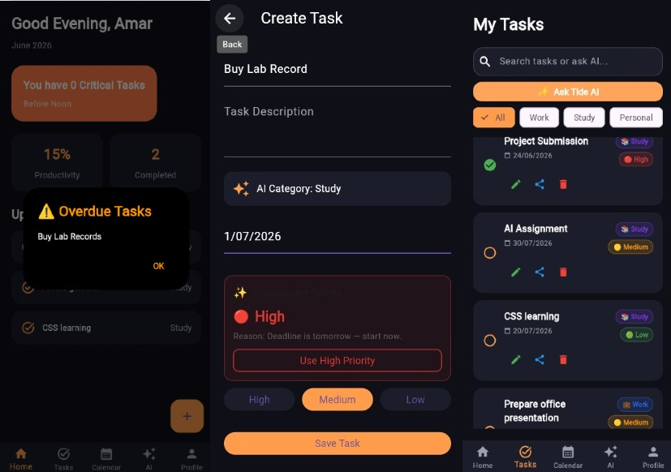
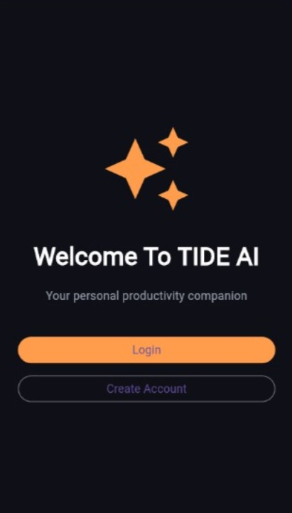

Flutter Application Screens






Productivity & Task Management Mobile Application
A productivity application concept designed in Figma and implemented using Flutter. The project explores task management, productivity tracking, calendar organization, and modern mobile application workflows.
Explore ProjectTIDE AI is a mobile productivity application prototype created to explore how digital tools can help users organize tasks, manage schedules, and improve productivity. The project includes both UI/UX design exploration and Flutter application development.
Create, organize, and manage daily tasks efficiently.
Plan schedules and manage important activities.
Track productivity goals and user progress.
An AI-inspired assistant interface concept for productivity support.

This project helped me understand the complete workflow of building a digital product: